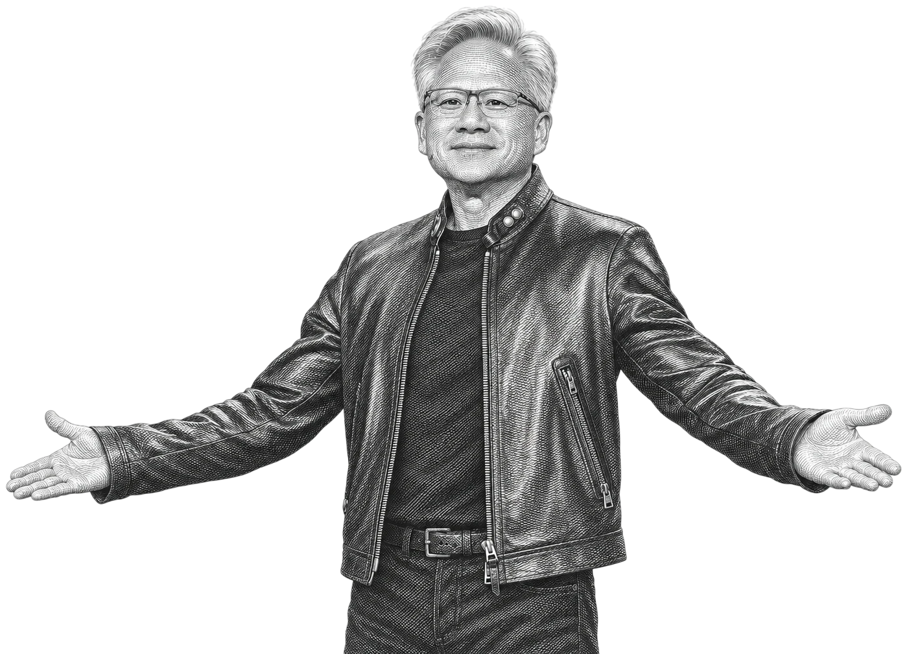

Jensen Huang returns to Nvidia
On 23 November, eleven days after announcing his resignation, Nvidia said its board had voted unanimously to reinstate Jensen Huang as President and CEO, and was satisfied with his candour and his ability to lead the company.1 After an extraordinary two weeks, this note sets out what happened and how our process guided each decision.
Nvidia share price, November 2026 (US$, daily close)2
- 19 NovJensen acknowledges personal matters on 8 Nov. The board opens an investigation.
- 212 NovJensen’s resignation as CEO is announced. In response to his public disclosure on 8 Nov, we have lowered our expected return for the risk to Jensen’s focus (our Focus discount) and are reducing the position by about one-third.
- 317 NovQuarterly revenue is up 103% yoy.3 The board says it does not intend to reinstate him.
- 420 NovThe low, 28% below the last close before the resignation.
- 523 NovJensen is reinstated. The shares close 31.5% higher on the day, within 1% of their 12 Nov close.
Our founder-led philosophy
We invest predominantly in founder-led businesses because we believe founder leadership can be a distinctive source of long-term value creation. Our back-testing of MSCI All Country World Index constituents from 2006 to 2026 suggests that, hypothetically, a portfolio of founder-led companies would have outperformed the broader index by around 3.3% p.a.4 This analysis is hypothetical and does not represent the returns of Ziller Global Fund. We believe this advantage comes from a founder’s frontline obsession, owner’s mindset and business insurgency, which shape a business over the long term.
Founder leadership is central to our investment thesis. When a founder leaves, the business no longer meets our founder-led investment hurdle, and we look to exit the position at an appropriate time.
The data behind our approach
Our back-testing also suggests that returns can diminish when a founder leaves. Across the companies analysed, the average annualised return was 11.2% while the founder led the business, compared with 6.1% after the founder departed.5 By comparison, the MSCI ACWI (AUD), which includes founder-led companies, returned 8.5% p.a. from 2006 to 2026.4 Our aim is to capture the founder-led advantage while it exists.
Average annualised return (% p.a.)5
Source: Ziller Funds Management back-test. Hypothetical; not the returns of Ziller Global Fund.
What happens when a founder returns?
Twelve of those founders later came back. In those cases, returns went from trailing the index while the founder was away to beating it once the founder returned: a median return of more than 20% p.a., and a median excess return over the benchmark of more than 9% p.a.6 That margin is wider than the 3.3% p.a. by which founder-led companies as a group outperformed in the same back-test.
This analysis is hypothetical and does not represent the returns of Ziller Global Fund. Past performance is not a reliable indicator of future performance.
We read these figures with caution. Twelve companies is a small sample, and Jensen was away for less than two weeks, not years. Nvidia sits somewhere between a founder who never left and a founder who came back. On either reading, companies in our back-testing did better with their founder than without.
A disciplined process
A founder’s departure does not mean we become forced sellers overnight. We reassess the expected returns and plan an orderly exit over an appropriate timeframe, guided by our investment process and risk adjusted expected returns, rather than reacting to headlines.
Our response began with the public disclosure of his personal matters on 8 November. Following that disclosure, we applied a discount under the Focus criterion in our quantitative checklist, reflecting the risk that personal, regulatory, political and internal pressures could divert his attention from the business. This lowered our five-year expected total return and led us to moderately reduce the position. With Jensen’s departure as CEO, we further lowered our valuation, reflecting greater uncertainty around Nvidia’s product roadmap, supplier relationships and CUDA’s competitive moat.
-
From 8 November
Focus discount applied
After the public disclosure
Following the public disclosure on 8 November, we applied our Focus discount and initiated a sale order for one-third of the position.
-
12 November
Founder-led test not met
When Jensen left
Nvidia no longer met our founder-led test. We planned an orderly exit and did not sell into the headlines.
-
23 November
Meets the test again
Now he is back
Nvidia meets the test again. We did not rush to exit and no longer need to. Our Focus discount sale stands.
-
From here
Focus discount stays
While the situation remains fluid
The Focus discount stays while the situation remains fluid. Nvidia remains a high-conviction holding, with an internally estimated five-year return well above our 15% p.a. hurdle.7
Still fluid, so the Focus discount stays
Jensen is back, but the position is not settled. The board’s independent investigation continues, as do government investigations and inquiries.1 We cannot rule out further regulatory action, or a further change in his role, including that he does not remain CEO. Personal and family matters also remain.
The matters under investigation are serious, and they are for the board and the authorities to assess, not for us. Jensen has trust to rebuild, and we have lowered our founder ranking of him to reflect that.8
These are the risks our Focus discount captures: anything that limits the time and authority Jensen can bring to the business over the medium term. The discount stays and, as with Tesla, we will reassess as these matters resolve.
Stronger governance structure
Why his return matters
Jensen Huang has spent three decades building Nvidia into one of the most important companies in the AI revolution. Under his leadership, Nvidia has been one of the strongest contributors to the fund, and its stock price is up approximately 10x since our initial investment. Few founders have created value like Jensen. Of more than 29,000 US stocks since 1926, Nvidia has the highest annualised return of any with a 20-year track record.10 On that record we regard him as a once-in-a-generation CEO.
Much of what he has built is the team: in our view, one of the most impressive groups of mission-driven, high-performing people in the world.
Many of Nvidia’s employees work for more than just a pay cheque. They work for the mission. With Jensen back, that mission has its guiding force again. We believe that is what will hold this team together, draw the best people in the industry to it, and keep Nvidia delivering for its customers for years to come.
In summary
There is a famous quote from Chicago Bulls general manager Jerry Krause in 1997:
“Players and coaches alone don’t win championships. Organizations win championships.”
Michael Jordan left the following year. The Bulls remained, but they never won another championship.
Founder-led investing requires conviction in the individuals behind the businesses and, equally, the discipline to act when their influence changes. We applied that discipline when Jensen left, and we are applying it again now that he is back. Much remains unresolved, and our Focus discount reflects that. But we remain shareholders, and we believe the importance of his return may be under-appreciated: it anchors one of the world’s most talented teams, focused on building the computing power the AI era depends on.
Notes and sources
- NVIDIA Corporation, “NVIDIA Announces CEO Transition”, 12 November 2026; “NVIDIA Board of Directors Establishes National Security and Export Control Oversight Committee”, 17 November 2026; and “NVIDIA Board Reinstates Jensen Huang as President, CEO and Board Director”, 23 November 2026.
- Nvidia (Nasdaq: NVDA) daily closing prices in US dollars, 30 October to 23 November 2026; the last close before the resignation was US$173.73 on 11 November.
- NVIDIA Corporation results for the quarter ended 25 October 2026, released 17 November 2026.
- Ziller Funds Management back-test of approximately 6,600 MSCI All Country World Index (AUD) constituents, 2006 to 2026. Founder-led companies were identified by Ziller based on its experience; selections are subjective and were made with the benefit of hindsight. Returns are annualised, in AUD, equal-weighted, with dividends reinvested, and do not reflect fees, transaction costs or taxes. The 3.3% p.a. is an equal-weighted portfolio of founder-led companies against the index, the MSCI ACWI (AUD), which returned 8.5% p.a. Hypothetical results have inherent limitations and are not the returns of Ziller Global Fund.
- Same dataset and method as note 4. ‘While the founder led the business’ measures each company’s annualised return from its listing date to the founder’s departure as CEO, managing director or equivalent primary executive role. ‘After the founder departed’ measures the period from departure to March 2026, or to delisting if earlier. The figures are simple averages across the approximately 2,600 companies in the dataset with a founder departure, using those with return data for each period (approximately 650 while the founder led the business and 2,300 after the founder departed). Hypothetical results; not the returns of Ziller Global Fund.
- The returning-founder figures cover the small subset of the companies in note 4 whose founder left and later returned to lead the business, comparing annualised stock returns (USD) with the MSCI World Index while the founder was away and after the return. Founder-led companies were identified by Ziller with the benefit of hindsight. Hypothetical results have inherent limitations and are not the returns of Ziller Global Fund.
- Ziller’s internal estimate of Nvidia’s five-year total return, after the Focus discount, at the 23 November 2026 closing price. It rests on assumptions that may not prove correct and is not a forecast or a guarantee of the return of the stock or of the fund.
- Jensen Huang remains a Quartile 1 Founder under Ziller’s investment process methodology.
- Jensen Huang beneficially owned 3.58% of Nvidia’s single class of common stock at 23 March 2026 (NVIDIA 2026 proxy statement).
- Bessembinder, H. (2024), “Which U.S. Stocks Generated the Highest Long-Term Returns?”, SSRN Working Paper No. 4897069. Analysis of 29,078 US common stocks in the CRSP database, December 1925 to December 2023. Nvidia recorded an annualised compound return of 33.38%, the highest of any stock with at least 20 years of return data.
- Glassdoor, “Best CEOs 2026”, published 12 August 2026. The list covers US employers with more than 1,000 employees and is based on anonymous, voluntary reviews by current and former US-based employees submitted between 16 May 2025 and 15 May 2026, with no nominations or surveys. The reviews pre-date the events of October and November 2026.
- Anonymous poll on Blind, June 2024, of about 3,000 respondents identifying as Nvidia employees: 76% said their net worth exceeded US$1 million and 37% said it exceeded US$20 million (as reported by Blind, September 2024; earlier reports of the same poll cited about one-third). Responses are self-selected, self-reported and unverified: indicative only.
Disclaimer
This article has been prepared and issued by Perennial Investment Management Limited (ABN 13 108 747 637, AFSL No. 275101) (PIML) as Responsible Entity and Ziller Funds Management Pty Limited (ABN 88 688 720 578) (Ziller) as the Investment Manager, a Corporate Authorised Representative (CAR 1317129) of Perennial Value Management Limited (ABN 22 090 879 904, AFSL No. 247293) (PVM). Ziller, PIML and PVM are part of Perennial Partners Limited (ABN 90 612 829 160, CAR 1293138 of PVM) (Perennial Partners).
This article is general advice and does not take account of your objectives, financial situation or needs. Before acting on this general advice you should consider the appropriateness of the advice having regard to your objectives, financial situation and needs. You should obtain and consider the Product Disclosure Statement and Target Market Determination (available at www.zillerfm.com) relating to any product described in this article before deciding whether to acquire, continue to hold or dispose of that product.
This article is based on information obtained from sources believed to be reliable and accurate at time of publication but we do not make any representation or warranty that it is accurate, complete or up to date. We accept no ongoing obligation to correct or update the information or opinions in it. Opinions expressed are subject to change without notice.
There are risks involved in investing. The value of investments can and does fluctuate and an individual investment may even become valueless. Past performance is not a reliable indicator of future performance. Any forecasts included in this article are predictive in character and therefore you should not place undue reliance on the forecast information. The forecasts may be affected by incorrect assumptions or by known or unknown risks and uncertainties. The actual results may differ substantially from the forecasts and some facts and opinions may change without notice.
Nothing in this article shall be construed as a solicitation to buy or sell any security or product, or to engage in or refrain from engaging in any transaction. To the extent permitted by law, neither Ziller nor any of its related entities accepts any responsibility for errors, omissions or misstatements of any nature, irrespective of how these may arise, nor will it be liable for any loss or damage suffered as a result of any reliance on the information included in this article. See also our full Disclaimer.
Past performance is not a reliable indicator of future performance.